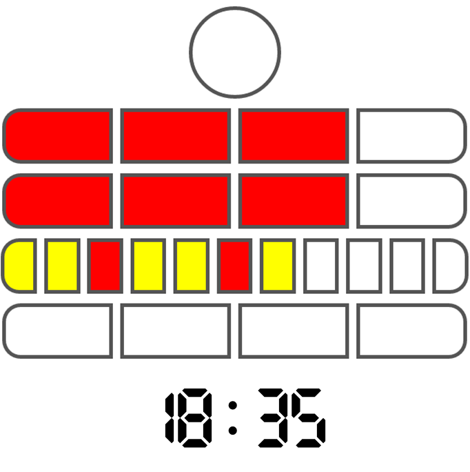

Berlin Clock Kata
Wix Grow Activity

Berlin Clock (cont.)

- Round light blinks to denote odd (on) or even (off) seconds.
- 1st row denotes five full hours each. 2nd row denotes one hour each.
- 3rd row eleven lights, which denote five full minutes each.
- 4th row indicates one full.
Kata
A code kata is an exercise in programming which helps programmers hone their skills through practice and repetition.
Theme of the day
Purely functional style.
Constraints
- Only
const, nolet. - No re-assignment or mutation.
- Recursion for iteration.
- Avoid built-ins.
No re-assignment
array[0] = 1; object.x = 2;
No mutation
Given this
const a = [1, 2, 3];
None of this
a.push(4); a.reverse(); a.sort() a.splice(1, 3);
Destruct & construct
function withFirst(x, array) {
const [_, ...rest] = array;
return [x, ...rest];
}
function withKey(object, key, value) {
return { ...object, [key]: value };
}
Recursion to iterate
No for, while, or .forEach.
a.map(n => n + 1);
a.filter(n => n % 2);
a.reduce((acc, n) => acc + n);
function range(n, m) {
return Array.from({length: m - n})
.map((_, index) => n + index);
}
Bonus: avoid built-ins
Replace .map, .reduce, .slice(1).
function tail(xs) {
const [, ...rest] = xs;
return rest;
}
function reduce(fn, xs, acc) {
return xs.length > 0
? reduce(fn, tail(xs), fn(acc, xs[0]))
: acc;
}
function map(fn, xs) {
return reduce((acc, x) => [...acc, fn(x)], xs, []);
}
Without Array.from.
function range(n, m) {
return n < m ? [n, ...range(n + 1, m)] : [];
}
Specification
S H×5 H M×5 M
00:00:00 . .... .... ........... ....
00:00:01 X .... .... ........... ....
22:23:18 . XXXX XX.. XX|X....... XXX.
Template
require('readline')
.createInterface({ input: process.stdin })
.on('line', line => console.log(`${line} => ${toBerlinClock(line)}`));
function toBerlinClock(line) {
return '. .... .... ........... ....';
}
$ echo 10:15:00 | node main.js 10:15:00 => . XX.. .... XX|........ .... $ node main.js < example.txt 00:00:00 => . .... .... ........... .... 23:59:59 => X XXXX XXX. XX|XX|XX|XX XXXX 18:48:02 => . XXX. XXX. XX|XX|XX|.. XXX.